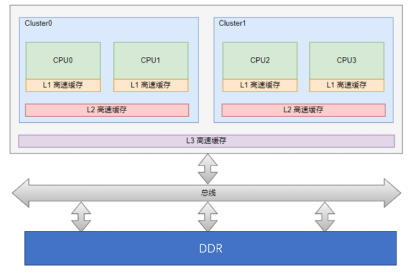
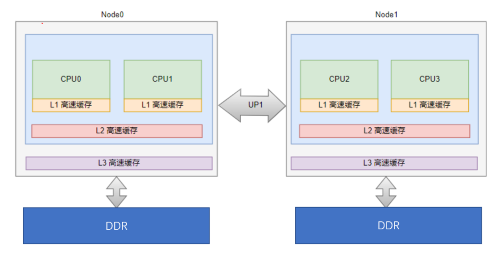
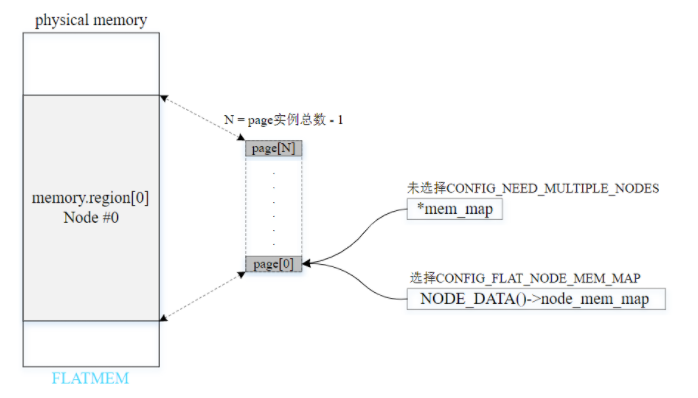
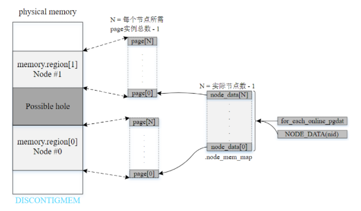
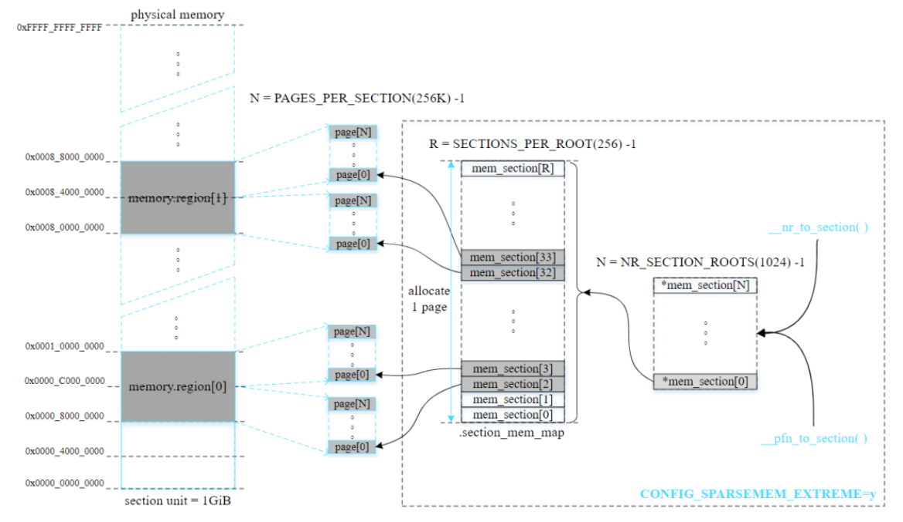

物理内存模型
1. 内存架构
1.1. UMA（Uniform Memory Access）
一致性内存访问

1.2. NUMA（Uniform Memory Access）
非一致性内存访问

2. 内存模型
2.1. FLATMEM
平坦内存模型：
- 内存连续且不存在空隙
- 多用于UMA系统

2.2. DISCONTIGMEM
不连续内存模型：
- 多个内存节点不连续且存在空隙
- 已废弃

2.3. SPARSMEM
稀疏内存模型：
- 多个内存区域不连续且存在空隙
- 支持内存热插拔（hot-plug）
- x86或ARM64采用
SPARSMEM_VMEMMAP变种，性能更优，跟FLATMEM相当 - 以section为单位管理 online 和 hot-plug 内存
稀疏内存模型以固定大小的单元（内存段section）（大小为MB~GB不等）统一管理分散的内存，易于内存管理。结构体struct mem_section管理一个section，并通过section_mem_map成员指向一个页帧描述符数组（page数组），数组元素数量为PAGES_PER_SECTION。
两种方法管理不同数量的section：
- CONFIG_SPARSEMEM_STATIC：通常用于大多数32位系统，编译时就确定section数量。
- CONFIG_SPARSEMEM_EXTREME：通常用于大多数64位系统和section较多的情况。如果内存中存在较大的空隙，使用两级section管理数组能够减少内存的浪费。初始化时创建第一级管理数组，只有在必要时才创建第二级管理数组。
struct mem_section {
/*
* This is, logically, a pointer to an array of struct
* pages. However, it is stored with some other magic.
* (see sparse.c::sparse_init_one_section())
*
* Additionally during early boot we encode node id of
* the location of the section here to guide allocation.
* (see sparse.c::memory_present())
*
* Making it a UL at least makes someone do a cast
* before using it wrong.
*/
unsigned long section_mem_map;
...
}
#ifdef CONFIG_SPARSEMEM_EXTREME
struct mem_section **mem_section;
#else
struct mem_section mem_section[NR_SECTION_ROOTS][SECTIONS_PER_ROOT]
____cacheline_internodealigned_in_smp;
#endif
EXPORT_SYMBOL(mem_section);
启用CONFIG_SPARSEMEM_EXTREME的例子：
